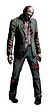

De: La Frikipedia, la enciclopedia extremadamente seria.
De: La Frikipedia, la enciclopedia extremadamente seria. De: La Frikipedia, la enciclopedia extremadamente seria.
| De la serie enfermedades y padecimientos: | |||
| Virus (biología) | |||
| |||
| Nombre común | sincondonus esterilis | ||
| Clase | Segundo de primaria | ||
| Afecta a | tus manos y las sábanas de la cama de tu habitacion | ||
| Número de enfermos | | ||
| Pruebas clínicas | Diagonostorrabia y Noobismo crónica | ||
| Extendida en | toda tu habitacion | ||
| Diagnosis (síntomas) | que te salgan alas | ||
| Tratamiento | Dos meses en la cama leyendo artículos frikipédicos y dolorosas inyecciones | ||
| Prognosis (expectativas) | unas cuantas | ||
| ¿Contagiosa? | si tienes cara de Wombat, ya estas contagiado | ||
| Dieta | 3 piernas ortopédicas diarias y un vaso de tornillos | ||
| Caso famoso | Amy Winehouse | ||
El virus es una cosa mala que te entra en el cuerpo y te pone malo, pero tiene su parte buena, como que no te hace falta ir a trabajar, y lo mejor es que si tienes cena con los suegros te libras,lo malo es últimamente curarlo ha sido casi imposible,pues desarrollo conciencia propia y quiere eliminar a todos los seres vivos.
Nuestro amigo el virus es una especie de zombie (no esta vivo ni muerto) que se alimenta de las células de un ser vivo cualquiera,aunque tiene una obsesión por los Wombats (cosa buena para nosotros los frikipedistas) y como su sistema de alimentación es parasitario comúnmente suele generar enfermedades respiratorias,digestivas,mentales y sexuales,y ahh,se reproduce a velocidades impresionantes (pero sin eso así que no se entusiasmen)
El virus esta compuesto de una cadena de proteínas, azúcar y un chip de control mental del FBI para ser activado en un momento especifico,aunque analisis recientes del Dr.House indican que tambien contienen sustancias similares a las utilizadas para crear a Diox.
Algunos virus están hechos de sustancias que afectan gravemente al cerebro como alcohol,marihuana,Reggaeton y restos de el Coronel Kentucky,todas descubiertas por los malvados laboratorios farmaceuticos de La Unión de Estados Capitalistas Salvajes
Todo comienza en los primeros segundos de el universo cuando Diox y el Monstruo de Macarrones volador peleaban por la supremacía en el universo,a pesar de que el monstruo de macarrones perdió,le arranco un pedazo con todo el odio del mundo y de ahi surgieron los virus. Poco después en una sesión en el estilista Diox se dio cuenta de que le faltaba un pedazo de la cara y entonces dijo "ohh me falta un pedazo de maligna cara" ,busco ese fragmento de materia y se dio cuenta de que allí habían unas criaturas que comían células a un ritmo muy lento,ahi se le ocurrió un plan macabro:dejar el virus en manos de cualquier idiota para que destruyera lentamente a la humanidad y a los abogados si era posible.
Pues el virus se dividio en 3 y cayo en manos de 3 personas Zelda,Link y Ganondorf ,Osama Bin Laden,El coronel Kentucky y el líder de la malvada corporación Sombrilla/Umbrella®
| Virus | Aspecto que generta | Sintomas y/o forma de contagio |
|---|---|---|
| VIH | ||
| Reggaeton | Se contagia juntándose con cualquier pandilla de subnormales y escuchando sonidos altamente dañinos para el cerebro,los síntomas son agresividad,HOYGANISMO,idiotez crónica y falta de gusto para vestir | |
| estupidez nuclear | Solo con tocar a un emo o Te coges unos caramelos,los comes y actúas como un estúpido frente al mundo, así creerán que eres un Wombat y te llevarán a una cuarentena,los sintomas que te trae es actuar como Touta Matsuda o George W. Bush | |
| Cani JR7-W2 | Se contagia por la ropa y la gente con la que andas,los sintomas son ganas de robar,matar y gritar cosas de nivel subnormal o inferior,decir que el metal apesta y que andara con sus pandillas de canis todo el tiempo,tiene variantes como el virus Ñero-13t o el Flaite-KA1 | |
| EmoVirus | Se contagia por escuchar My chemical Romance,Panda o cualquier otra banda de pacotilla,los sintomas son llamadas frecuentes a la linea de asistencia para suicidios,neutralidad de genero y otros sintomas no descubiertos.. | |
| Virus T |  |
Se contagia a través de las mordidas y los engaños corporativos,sus principales síntomas son deformidad,gusto por la carne del cerebro y resistencia al plomo,la única cura de este virus es la muerte (aunque en algunos casos el virus da superpoderes). |
| g$$&&*#lusisitis B | Se contagia a través de videos malos de TuTubo de como fabricar rifles caseros así como de hermanos mayores pajilleros suicidas de películas americanas telefilm de después de comer en Antena 3. |
| | |||||||||
Antropología y Evolución
Rarezas biológicas inclasificables
|
Autor(es):